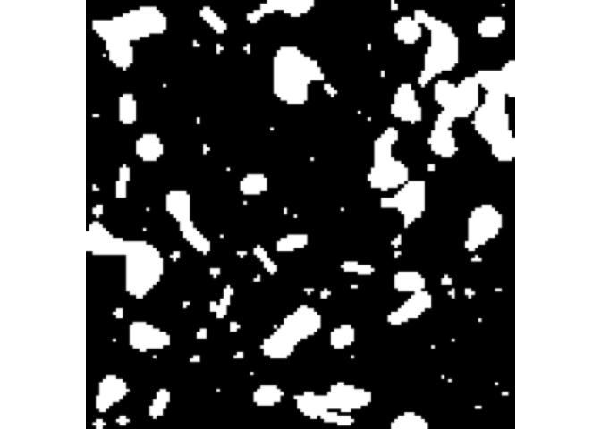

rome is a minimal R package to read and write multiscale OME-Zarr files.
It also provides helper and methods to manipulate the resulting ome_zarr objects the same way one would manipulate traditional arrays in R. For example, you can subset an ome_zarr object using the [ operator, and the subsetting will be applied to all levels of the multiscale OME-Zarr object.
Installation
You can install the development version of rome like so:
# install.packages("pak")
pak::pak("Huber-group-EMBL/rome")Image
This is a basic example which shows you how to read a OME-ZARR image of version 0.4. By default, the read will be performed lazily using ZarrArray.
library(rome)
library(utils)
omezarrzip <- system.file("extdata", "test_ngff_image_v04.ome.zarr.zip", package = "rome")
dir.create(td <- tempfile())
unzip(omezarrzip, exdir = td)
x <- ome_read(td)
x
#> Multiscale OME-Zarr image (v0.4) object.
#> Scale: 1/5
#> <2 x 5 x 5> DelayedArray object of type "integer":
#> ,,1
#> [,1] [,2] [,3] [,4] [,5]
#> [1,] 11 16 9 11 11
#> [2,] 9 7 10 6 11
#>
#> ,,2
#> [,1] [,2] [,3] [,4] [,5]
#> [1,] 2 11 8 11 10
#> [2,] 12 2 8 11 11
#>
#> ,,3
#> [,1] [,2] [,3] [,4] [,5]
#> [1,] 11 6 18 4 7
#> [2,] 12 8 13 6 9
#>
#> ,,4
#> [,1] [,2] [,3] [,4] [,5]
#> [1,] 13 8 17 6 3
#> [2,] 9 6 8 5 8
#>
#> ,,5
#> [,1] [,2] [,3] [,4] [,5]
#> [1,] 14 13 4 10 5
#> [2,] 9 11 6 12 6Otherwise the read can be performed in memory as:
x <- ome_read(td, lazy = FALSE)For remote OME-ZARR files, you can use the paws.storage::s3 client to read the data directly from the S3 bucket without downloading it first:
Labels
Labels of image pyramids can also be read as images
library(rome)
library(utils)
omezarrzip <- system.file("extdata", "test_ngff_image_v04.ome.zarr.zip", package = "rome")
dir.create(td <- tempfile())
unzip(omezarrzip, exdir = td)
x <- ome_read(file.path(td, "labels/blobs"))
plot(x, all = TRUE)